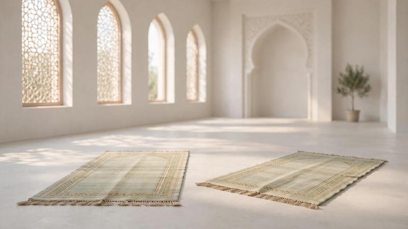

Common Salah Mistakes and How to Correct Them

Learning Salah takes practice. Beginners may need time to learn the prayer movements, recitations, prayer times, and preparation. Making a mistake while learning should not discourage someone from continuing to improve.
The best approach is to learn the steps gradually, practice consistently, and ask a qualified teacher about specific situations. It is also important to distinguish between a learning mistake, an action that should be corrected, and a mistake that may affect the validity of a prayer.
Start by learning the order of Salah, its main movements, and the essential recitations step by step.
Read How to Pray Salah Step by Step →1. Not Completing the Required Purification
A person may begin Salah without having the purification required for prayer. When Wudu is required, it should be performed before starting Salah.
Beginners should learn how to make Wudu, understand which situations require it, and learn which actions invalidate it. Questions involving illness, inability to use water, or other special circumstances may require specific guidance.
2. Being Unsure About Prayer Times
Each of the five obligatory prayers has a prescribed time. Beginners may sometimes be unsure when a prayer time begins or ends, especially when travelling or living in a place with changing daylight hours.
Use a reliable local prayer timetable and learn the basic times for Fajr, Dhuhr, Asr, Maghrib, and Isha. If you are uncertain about a special circumstance, ask a knowledgeable teacher or scholar.
Learn About Prayer Times in Islam →
3. Forgetting the Number of Rak'ahs
Beginners may sometimes lose track of the number of rak'ahs they have performed. Learning the structure of each obligatory prayer can make the routine easier to follow.
- Fajr: 2 obligatory rak'ahs.
- Dhuhr: 4 obligatory rak'ahs.
- Asr: 4 obligatory rak'ahs.
- Maghrib: 3 obligatory rak'ahs.
- Isha: 4 obligatory rak'ahs.
These numbers refer to the obligatory prayers, not additional Sunnah or voluntary prayers.
If you become uncertain during Salah, the appropriate response depends on the circumstances and the rulings you follow. Learn the relevant guidance rather than assuming every case is handled in exactly the same way.
Review the Number of Rak'ahs in Each Prayer →
4. Rushing Through Salah
Moving too quickly through the positions of Salah can make it difficult to perform the prayer calmly and correctly. Learners should take time to understand the movements and settle into each position rather than rushing to finish.
Practice the sequence of standing, bowing, rising from bowing, prostrating, and sitting. A teacher can demonstrate the movements and help you understand where to pause and how to perform each position properly.
5. Not Learning the Main Recitations
Some beginners focus on physical movements but delay learning what is recited during Salah. Learning the main recitations gradually can make prayer easier to follow and help learners feel more confident.
Start with Al-Fatihah and then learn the other recitations used in the positions of prayer according to the method you are taught. Work on pronunciation steadily instead of trying to memorize everything at once.
6. Struggling With Quranic Pronunciation
Arabic letters can be challenging for learners whose first language is not Arabic. Some sounds require articulation points or tongue positions that may feel unfamiliar at first.
Listen to reliable recitation examples, practice carefully, and ask a qualified Quran teacher to identify sounds that need attention. Regular practice can help improve pronunciation over time.
Do not assume that every pronunciation error has the same ruling. If you are concerned about a particular recitation mistake and its effect on Salah, seek guidance from a qualified teacher or scholar.
7. Moving Between Positions Without Proper Composure
New learners may move from one position to another too quickly or may be unsure how to perform a movement. Learning the correct sequence and practicing it with guidance can help establish a consistent routine.
Review the complete prayer sequence, including standing, bowing, rising from Ruku, prostration, sitting between prostrations, and the final sitting.
8. Being Unsure About the Qiblah
Muslims should face the Qiblah when praying and when able to do so. A beginner may be unsure of the correct direction when travelling or praying in an unfamiliar place.
A reliable Qiblah compass or direction tool, a nearby mosque, or a knowledgeable local Muslim may help establish the direction. If you cannot determine the direction despite making a reasonable effort, ask a qualified scholar about your circumstances.
9. Not Understanding the Conditions of Salah
Beginners should learn the basic conditions and requirements of prayer. These include matters such as the prescribed prayer time, the required purification, appropriate covering, facing the Qiblah when able, and intention.
The detailed rulings can vary by circumstance and school of Islamic jurisprudence. A general checklist is useful for learning, but it should not replace qualified guidance about an individual situation.
Learn the Conditions of Salah →
10. Becoming Discouraged While Learning
Learning Salah is a process. Beginners may need repeated practice to remember the sequence, improve recitation, and become comfortable with the movements.
Continue learning patiently, ask questions when something is unclear, and focus on improving one skill at a time. A qualified teacher can help you distinguish between ordinary learning difficulties and matters that need specific correction.
What Should You Do If You Make a Mistake in Salah?
The correct response depends on the type of mistake and the circumstances in which it happened. Some mistakes may require a corrective action, while others may not affect the validity of the prayer.
For example, forgetting part of the prayer, becoming uncertain about the number of rak'ahs, or making a recitation error may involve different rulings. The details can also depend on the school of Islamic jurisprudence being followed.
Do not assume that every mistake automatically invalidates the prayer, and do not assume that every mistake can be corrected in the same way. If you are unsure, ask a qualified scholar or teacher to explain the ruling for your particular situation.
Simple Checklist Before Salah
How to Improve Your Salah Step by Step
You do not need to learn every detail in one day. A gradual learning plan can help you build a reliable foundation.
- Learn the preparation and conditions of Salah.
- Understand the sequence of the prayer movements.
- Learn the number of obligatory rak'ahs in each prayer.
- Practice the main recitations and work on pronunciation.
- Perform Salah regularly and review what you have learned.
- Ask a qualified teacher about movements, recitations, or rulings you do not understand.
Complete Prayer Learning Guide
Explore these related guides to learn more about Salah and its preparation:
- Prayer in Islam: A Guide to Salah
- How to Pray Salah Step by Step
- The Five Daily Prayers in Islam
- Prayer Times in Islam
- How Many Rak'ahs Are in Each Prayer?
- What to Say in Salah
- How to Make Wudu
- Conditions of Salah
📚 Learn Quran and Islamic Studies Online
Al Shimaa Quran Academy offers online Quran and Islamic studies lessons for children and adults. Learners can discuss their goals and suitable learning options with the academy.
Book a Free Trial Lesson →